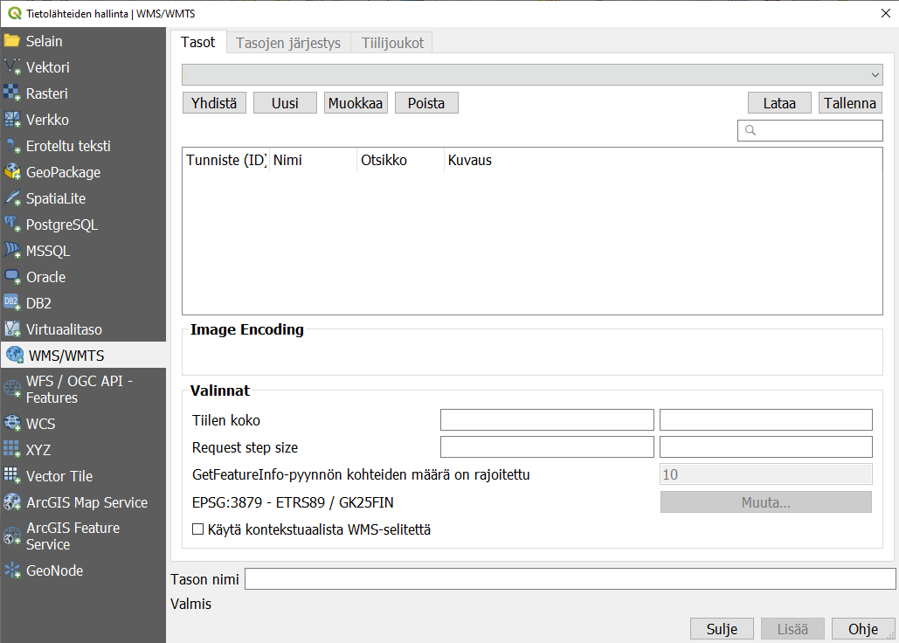
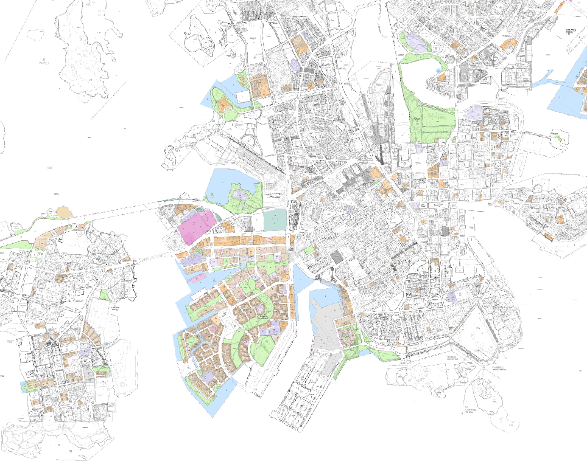
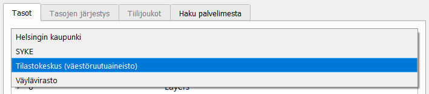
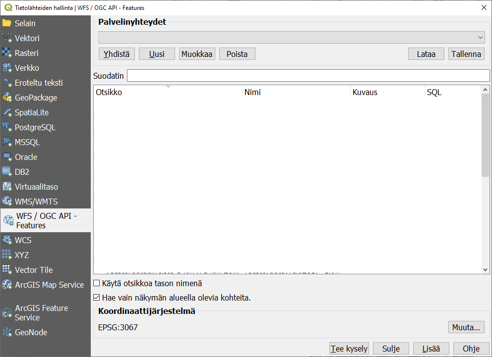
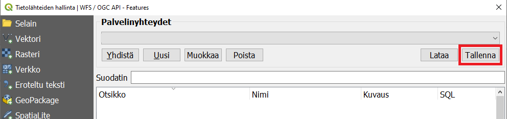

Kappale 3
Luento 3
Harjoitus 3: Paikkatietopalvelut
Harjoituksen sisältö
Harjoituksessa lisätään erilaisia paikkatietopalveluita QGISiin.
Harjoituksen tavoite
Harjoituksen jälkeen koulutettava osaa lisätä erilaisia paikkatietopalveluita QGISiin.
Arvioitu kesto
30 minuuttia.
Valmistautuminen Avaa uusi QGIS-projekti (Projekti > Uusi) ja tallenna se nimellä “QGIS-harjoitus 3”. Tässä harjoituksessa muodostetaan yhteyksiä erilaisiin paikkatietopalveluihin, jonka kautta lisätään rasteri- ja vektoriaineistoja QGIS-projektiin.
WMS-palvelun lisääminen
Luodaan ensimmäiseksi yhteys WMS (Web Map Service)-paikkatietopalveluun, josta saadaan ensimmäiset rasteriaineistot projektiin. Avaa Tietolähteiden hallinta ja valitse WMS/WMTS-välilehti.

Tämä työkalu avaa WMS-palvelujen käyttö- ja määrityslomakkeen. QGISissäsi saattaa olla jo määriteltynä joitakin WMS-palveluja. Saat ne auki alasvetovalikosta. Lisätään uusi WMS-palvelu klikkaamalla Uusi. Määrittele avautuvassa Luo uusi WMS/WMTS-yhteys -ikkunassa haluamasi nimi WMS-palvelulle.
Psst! Nimeä paikkatietopalveluyhteydet esimerkiksi aineiston tuottajan (kuten kaupungin) mukaan. Tarkentavana lisätietona voi tarvittaessa olla esimerkiksi aineiston teema.
Lisää URL-kenttään Helsingin kaupungin WMS-palvelun osoite: http://kartta.hel.fi/ws/geoserver/avoindata/wms. Jotkin paikkatietopalvelut voivat vaatia kirjautumisen palveluun, mutta avoimet aineistot eivät – jätä siis No Authentication aktiiviseksi.

Kun yhteyden tiedot on määritelty, paina OK. Paina vielä Tietolähteiden hallinta -ikkunassa Yhdistä. Nyt QGIS muodostaa yhteyden määriteltyyn paikkatietopalveluun ja ikkunaan ilmestyy listaus palvelun paikkatietoaineistoista. Huomaa, että listauksessa on alatasoja. Jatkossa QGIS muistaa tallennetut yhteydet.

Valitse saatavilla olevista aineistoista Ajantasa_asemakaava_maanpaallinen_varillinen. Voit vaihtaa QGIS-projektiin lisättävän tason nimen haluamaksesi kohdassa Tason nimi. Paina lopuksi Lisää, niin QGIS lisää tason projektiisi.

Huomaa, että voit joutua odottamaan hetken, kun karttatasoa ladataan palvelimelta. Voit nyt sulkea Tietolähteiden hallinta -ikkunan ja palata karttaikkunaan. Karttaikkunassasi pitäisi nyt näkyä Helsingin kaupungin värillinen asemakaava-aineisto rasteritasona.

Luo nyt muutama WMS-paikkatietopalveluyhteys lisää. Voit käyttää hyväksesi Gispon ylläpitämää listausta avoimista paikkatietopalveluista osoitteessa https://gispohelp.zendesk.com/hc/fi/articles/208159815. Lisää esimerkiksi seuraavat yleishyödylliset WMS-palvelut QGIS-projektiisi:
Tilastokeskus (väestöruutuaineisto): http://geo.stat.fi/geoserver/vaestoruutu/wms
Väylävirasto: https://julkinen.vayla.fi/inspirepalvelu/avoin/wms
SYKE: https://paikkatieto.ymparisto.fi/ArcGIS/services/INSPIRE/SYKE_Maanpeite/MapServer/WMSServer
Voit navigoida lisäämiesi WMS-paikkatietopalveluiden välillä Tietolähteiden hallinta -ikkunan WMS/WMTS-välilehden ensimmäisen alasvetovalikon avulla.

Kun olet valinnut haluamasi paikkatietopalvelun, muista klikata Yhdistä alasvetovalikon alapuolelta. Paikkatietopalveluiden aineistot eivät tule automaattisesti näkyviin pelkän palveluvalinnan kautta, vaan siihen on erikseen luotava vielä yhteys.
WFS-palvelun lisääminen
Luodaan seuraavaksi yhteys WFS (Web Feature Service)-paikkatietopalveluun, jonka kautta QGIS-projektiin saadaan lisättyä erilaisia vektoriaineistoja. WFS-palveluihin yhdistäminen tapahtuu muuten samalla tavalla kuin WMS-palveluihin yhdistäminen, mutta WMS/WMTS-välilehden sijaan on valittava WFS-välilehti. Avaa siis jälleen Tietolähteiden hallinta > WFS-välilehti tai klikkaa suoraan Tasojen hallinnan työkalupalkista löytyvää Lisää WFS-taso -painiketta  .
.

Psst! WFS-paikkatietopalvelussa pystyt lataamaan aineiston tai osan aineistosta erilaisten lausekkeiden avulla.
Luo uusi yhteys alla listattuihin WFS-paikkatietopalveluihin tai valitse haluamasi palvelut aikaisemmin mainitusta Gispon ylläpitämästä listauksesta.
Tilastokeskus (väestöruutuaineisto): http://geo.stat.fi/geoserver/vaestoruutu/wfs
Väylävirasto: https://julkinen.vayla.fi/inspirepalvelu/avoin/wfs
Jyväskylän yliopisto (liikuntapaikat): http://lipas.cc.jyu.fi/geoserver/lipas/ows
Kun olet lisännyt WFS-paikkatietopalvelun tiedot QGISiin, voit ottaa siihen yhteyden samalla tavalla kuin WMS-palveluiden yhteydessä. Kun lisäät aineistoja WFS-palveluista QGIS-projektiisi, voit huomata, että aineistot ovat vektorimuotoisia. Jos haluat käsitellä WFS-palvelun kautta lisäämääsi aineistoa (esimerkiksi editoida kohteita), täytyy se tallentaa lokaalisti omalle tietokoneellesi.
Paikkatietopalvelujen tallentaminen
QGIS tallentaa automaattisesti siihen lisätyt paikkatietopalvelut käyttämääsi QGIS-profiiliin. Eli kun seuraavan kerran avaat QGISin samalla käyttäjäprofiililla, paikkatietopalvelut löytyvät valmiiksi Tietolähteiden hallinnan WMS/WMTS- ja WFS-välilehdiltä. Paikkatietopalvelut on kuitenkin myös mahdollista tallentaa erilliseksi XML-tiedostoksi, jonka voit ladata toiseen QGIS-käyttäjäprofiiliin tai jakaa eteenpäin muille kollegoille käytettäväksi. Avaa Tietolähteiden hallinta ja valitse WFS-välilehti. Klikkaa Tallenna-painiketta.

QGISiin avautuu Hallitse yhteyksiä -ikkuna, jossa on listaus kaikista QGISiin lisätyistä WFS-palveluista. Voit tallentaa palveluita yksitellen tai viedä kaikki yhteydet yhteen XML-tiedostoon. Haluamme nyt tallentaa kaikki yhteydet samaan tiedostoon, joten klikkaa Valitse kaikki ja tämän jälkeen paina Vie.

Tallenna yhteydet haluamaasi sijaintiin omalla tietokoneellasi. Koita tämän jälkeen ladata tämä XML-tiedosto klikkaamalla Lataa Tietolähteiden hallinta -ikkunassa.

Voit valita aukeavassa Hallitse yhteyksiä -ikkunassa erikseen yhteydet, jotka haluat lisätä käyttämääsi QGIS-profiiliin ja QGIS-projektiin.
Kun olet valmis, tallenna projektitiedosto kurssihakemistoon pikanäppäimellä CTRL + T (tai CTRL + S) tai päävalikosta Projekti > Tallenna.
Psst! Koulutuksen jälkeen saat henkilökohtaista tukea Gispon tukipalvelusta. Lähetä kysymyksesi tai kommenttisi osoitteeseen tuki@gispo.fi!